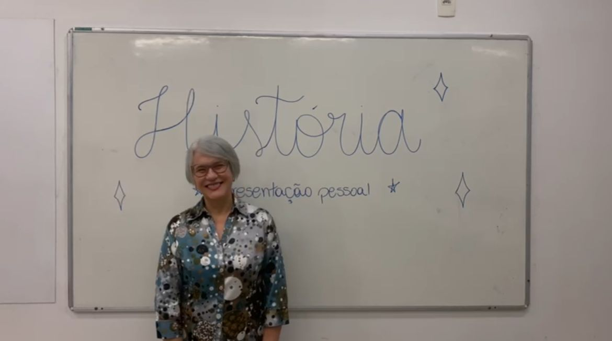

Relatos de profissionais na área de humanas
Agda Aparecida Serpentini
Agda Aparecida Serpentini, professora de História há 28 anos na Escola SESI, construiu uma carreira marcada por dedicação e paixão. Seu amor pela História nasceu ainda na adolescência, quando passava horas mergulhada em livros sobre grandes civilizações e revoluções. “Eu sempre me fascinava com as conexões entre o passado e o presente. Entender como chegamos até aqui era quase mágico para mim”, conta Agda. Inspirada por professores que a marcaram na escola, decidiu que queria transmitir esse mesmo encantamento para outras pessoas. Ao longo dos anos, sua missão foi muito além de ensinar datas e eventos; Agda buscou despertar o senso crítico e a curiosidade nos alunos. “A História não é só sobre o que aconteceu, mas sobre como podemos aprender com isso para construir algo melhor.” Na sala de aula, Agda utiliza métodos inovadores, misturando tecnologias modernas com narrativas envolventes e atividades práticas, como feiras culturais e visitas históricas. Ela acredita que aproximar os alunos da vivência histórica os torna cidadãos mais conscientes e engajados. Hoje, com quase três décadas de carreira no SESI, Agda é mais do que uma professora. Ela é uma mentora, uma fonte de inspiração para gerações de estudantes que aprenderam com ela não apenas sobre o passado, mas sobre o poder do conhecimento em transformar o futuro.
Débora Aladim

Débora Aladim, de 25 anos, é referência no universo da educação online no Brasil. Formada em História pela UFMG, ela transformou sua paixão pela disciplina em uma carreira de sucesso, comandando um dos canais educativos mais renomados do país. Seus vídeos, que começaram como resumos improvisados em 2013, hoje alcançam milhões de pessoas nas plataformas YouTube, Instagram e TikTok. Conhecida por abordar História de maneira prática e dinâmica, Aladim também oferece dicas de redação para o Enem e explora curiosidades históricas pouco abordadas, como a Revolução Chinesa e a história da África. Sua capacidade de adaptar conteúdos para diferentes públicos e plataformas ampliou seu impacto na educação, atraindo alunos de todas as idades. Além do sucesso, Débora enfrenta críticas por abordar temas fora de sua formação, como redação. Para garantir qualidade, ela trabalha com uma equipe de revisores especializados, reafirmando seu compromisso com a educação acessível e inclusiva. Sua trajetória demonstra o poder da inovação e da tecnologia na democratização do aprendizado.